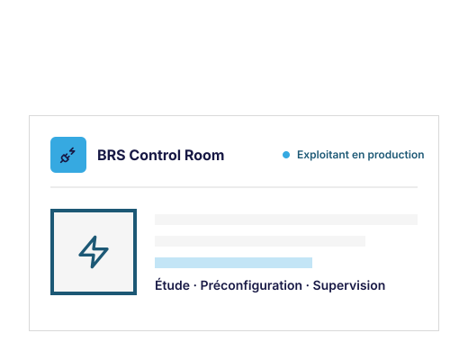

Étude et dimensionnement
Notes de calcul, schémas électriques et dimensionnement, par des équipes qui exploitent des parcs de bornes au quotidien.
Sur les appels d'offres tertiaires et copropriétés, le cahier des charges exige un exploitant désigné. Sans cette ligne, vous êtes éliminé, ou vous vous adossez à un concurrent qui peut vous prendre le client. Avec BRS Connect, vous répondez avec les briques d'un opérateur IRVE en production, sous votre nom, avec son accord projet par projet. Étude, préconfiguration, supervision, exploitation, support : à la prestation. Votre client reste votre client. Votre marge reste libre.

Notes de calcul, schémas électriques et dimensionnement, par des équipes qui exploitent des parcs de bornes au quotidien.
On prépare vos bornes en amont, pour une mise en service plus fluide sur site.
Télérelève, suivi de parc et continuité de service, sans construire votre propre plateforme. Et un exploitant en production, désignable dans vos dossiers d'appels d'offres avec l'accord de BRS, projet par projet.
Un support opérationnel après l'installation, pour que votre client ne soit jamais seul.
Sur les appels d'offres tertiaires et copropriétés, le dossier exige un exploitant ou une supervision désignés. Devenir exploitant vous-même supposerait une plateforme, une astreinte et des références en production : des années d'investissement pour cocher une ligne. Alors soit vous passez votre tour, soit vous nommez un concurrent dans votre propre dossier. Et ce n'est pas le seul endroit où le métier se rétrécit.
Une fois la borne en service, vous n'avez rien à proposer pour la suite. Le client contracte sa supervision ailleurs, ou reste sans solution, et vous perdez le contact au moment où le revenu récurrent commence.
Après la garantie, les appels ne s'arrêtent pas : borne en panne, badge, facturation de recharge. Sans outil de télémaintenance ni modèle de support, chaque appel se traite à perte, ou ne se traite pas.
Sur les projets multi-bornes complexes (TGBT, note de calcul, puissances DC), un bureau d'études généraliste coûte cher en délais : erreurs de dimensionnement, allers-retours. Et monter un BE spécialisé en interne ne se justifie pas tant que ces projets restent irréguliers.
Sans préconfiguration en amont, la mise en service prend plus de temps que prévu et complique la planification du chantier. C'est un savoir-faire logiciel et réseau, distinct du geste électrique.
L'ubérisation gagne le métier : des plateformes de leads et des donneurs d'ordres distribuent les chantiers, écrasent les marges et confisquent le client. L'installateur devient exécutant sur son propre marché.
BRS Connect prend le chemin inverse, point par point. Vous gardez le client. Vous fixez votre marge. Et l'exploitant joue dans votre dossier : les briques d'un opérateur en production, mobilisées sous votre nom, projet par projet, en coulisses.
Pas de chantiers distribués, pas de client confisqué. Vous arrivez avec votre projet, et BRS Connect intervient en arrière-plan, sur les seules briques que vous décidez d'activer.
Chaque prestation se refacture à votre client au prix que vous fixez, pose comprise. Personne ne décide de votre marge à votre place.
Ce n'est ni une franchise, ni un abonnement, ni un programme à paliers. Un accord-cadre léger et non engageant cadre l'entrée, puis chaque projet fait l'objet de son propre devis. Et un référent unique chez BRS, nommé, suit tous vos projets et vous route vers les bonnes compétences.
Dimensionnement, notes de calcul et schémas électriques, en appui de vos équipes quand le projet le demande.
Vos équipements préparés en amont, pour une mise en service plus rapide et plus prévisible.
Télérelève, reporting et support, pour prolonger la relation client après l'installation sans construire votre propre plateforme.
Vous gardez ce que vous savez déjà faire. BRS Connect intervient sur ce qui manque, ou en renfort ponctuel.
La question qui revient en premier : est-ce que déléguer la technique, c'est risquer sa relation client ? Voici la répartition, point par point. Et rien ne se passe auprès de votre client final sans votre décision, facturation comprise.
Vous gardez la main. Et le réseau fonctionne dans les deux sens : selon ses besoins d'opérateur, BRS confie aussi des poses à des partenaires du réseau. De confrère à confrère, mêmes règles des deux côtés.
Copropriété, tertiaire, appel d'offres à sécuriser : le Premier chantier démarre sur un projet réel, pas sur une déclaration d'intention. Un accord-cadre léger et non engageant cadre l'entrée.
Étude, préconfiguration, supervision, exploitation, support, exploitant désigné pour un dossier d'appel d'offres : chaque projet fait l'objet de son propre devis, sans abonnement ni palier.
Le Premier chantier est suivi de près : un interlocuteur nommé chez BRS route le projet vers les bonnes compétences et le débriefe avec vous à la fin.
Pas de volume imposé, pas d'exclusivité territoriale. Vous mobilisez le réseau quand un projet le justifie, et vous restez pilote de la relation client, du premier contact à la garantie.
Opérateur IRVE depuis 2012, certifié Qualifelec, Borne Recharge Service pilote déjà l'ensemble du cycle de vie de la recharge sur ses propres parcs : conception, financement, installation, mise en service, supervision, exploitation, maintenance, gestion de l'énergie et support client. BRS Connect met cette organisation à disposition de ses installateurs partenaires.
Depuis 2012, Borne Recharge Service intervient sur quatre segments : copropriétés, bailleurs sociaux, entreprises et maisons individuelles.
Qualifelec, expérience terrain, supervision, exploitation : ce sont des compétences déjà exercées, pas des arguments ajoutés pour la page.
BRS Connect démarre : il n'y a pas encore de témoignages partenaires à afficher. En contrepartie, les premiers partenaires construisent le réseau avec BRS : accès direct aux équipes, référent nommé, Premier chantier co-construit.

Supervision, télérelève et portail client, déjà utilisés par Borne Recharge Service, opérateur qualifié IRVE.
Ces entreprises font déjà appel à Borne Recharge Service. Elles ne sont pas des clients du réseau BRS Connect.


Un exploitant en production dans votre dossier, sous votre nom, avec l'accord de BRS projet par projet, références d'opérateur à l'appui. Des marchés directs redevenus accessibles, sans vous adosser à un concurrent.
Supervision, télémaintenance, reporting et support prolongent la relation client après la mise en service. Vous portez le contrat récurrent vous-même, ou BRS le porte et vous en reverse une part définie ensemble, projet par projet.
Les appels subis deviennent un contrat de support et de télémaintenance facturable, adossé aux outils de l'opérateur.
Étude et dimensionnement par des équipes qui exploitent des parcs de bornes au quotidien, pas par un bureau d'études généraliste. Moins d'allers-retours.
Équipements préconfigurés en amont du chantier : moins de temps passé sur site, un planning qui tient.
Non. Vous restez pilote de la relation client, du chantier et du suivi, du premier contact jusqu'à la garantie. BRS n'apparaît auprès de votre client final, facturation comprise, que si vous le décidez : c'est une liberté de plus, pas une règle par défaut.
À la prestation, projet par projet. Vous payez uniquement les briques effectivement mobilisées : étude, préconfiguration, supervision, exploitation ou support. Pas d'abonnement, pas de palier, pas de logique de franchise.
Deux choses. Votre marge d'abord : vous refacturez chaque prestation à votre client au prix que vous fixez, sur la pose comme sur le reste. Le récurrent ensuite : la supervision et l'exploitation génèrent un revenu régulier. Soit vous portez le contrat et le facturez directement, soit BRS Connect le porte et vous en reverse une part définie ensemble, projet par projet : c'est votre choix. Nous ne publions ni montants ni pourcentages.
Non. Un accord-cadre léger et non engageant cadre l'entrée dans le réseau : conditions générales, confidentialité, principe de reversion, appui nominatif aux appels d'offres. Ensuite, chaque projet fait l'objet de son propre devis. Pas d'engagement de durée, pas de volume minimum, pas d'exclusivité territoriale.
La fiabilité n'est pas théorique : télérelève, supervision, exploitation et support sont déjà exercés par Borne Recharge Service sur ses propres parcs (copropriétés, bailleurs sociaux, entreprises). Et la responsabilité suit le contrat : qui le porte répond à son client. Quand vous portez le contrat, vous répondez à votre client et BRS vous répond. Chaque partenaire a par ailleurs un référent unique, nommé, qui suit tous ses projets.
Vous n'avez pas à tout externaliser. BRS Connect intervient sur ce qui manque, ou en renfort ponctuel. Ce que vous savez déjà faire reste chez vous.
Sur certains marchés, nous pouvons nous croiser : la coexistence est assumée. Elle fonctionne dans les deux sens : les partenaires mobilisent les briques de BRS, et BRS confie des poses à des partenaires du réseau selon ses besoins d'opérateur. De confrère à confrère, mêmes règles des deux côtés. Et rien ne se passe auprès de votre client final sans votre initiative : BRS n'y apparaît, facturation comprise, que si vous le décidez.
Le Premier chantier est la porte d'entrée du réseau : un projet réel (copropriété, tertiaire, appel d'offres à sécuriser), mené avec un accompagnement renforcé et un référent nommé, sans engagement sur la suite. Décrivez-nous votre projet, nous regardons ensemble quelles briques s'y intègrent. Les candidatures partenaires sont ouvertes.
Ce lien ouvre le formulaire de contact de Borne Recharge Service. Précisez que vous êtes installateur IRVE et que votre demande concerne un partenariat BRS Connect.